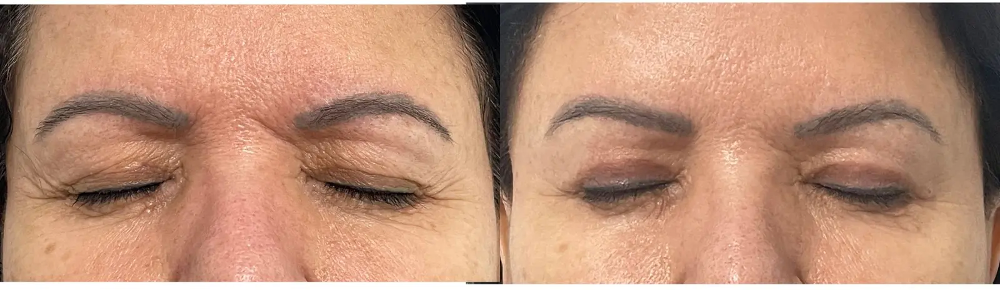

Proporção
Cada plano parte das proporções, pele, tecidos e identidade facial da paciente.
Cirurgias e tratamentos estéticos com planejamento individualizado, buscando naturalidade, proporção e segurança — da face e do olhar à mama e ao contorno corporal.
Atendimento na Clínica LIV Faria Lima ↗ , em Pinheiros · ver rota no Google Maps

O planejamento facial começa pela anatomia real de cada paciente. A proposta não é criar um rosto novo, mas restaurar harmonia, suavizar sinais do tempo e preservar expressão.
Cada plano parte das proporções, pele, tecidos e identidade facial da paciente.
O objetivo é um resultado que pareça descansado e coerente, não artificial ou esticado.
Indicação criteriosa, expectativas realistas e preparo clínico quando necessário.

O lifting facial e cervical trata a flacidez da face e do pescoço de forma estrutural. A ideia é restaurar contorno, suavizar sinais do envelhecimento e evitar o aspecto artificial de pele apenas esticada.
Entender o lifting facialNossa visão de naturalidade, indicação cirúrgica e preparo para uma decisão segura.
A Dra. Amanda conta omo essa trajetória molda seu olhar técnico, estético e humano no cuidado com cada paciente.
Abrir reel no InstagramNaturalidade, discrição e respeito à individualidade — realçar sem exagerar, sem receita de bolo.
Abrir no Instagram → Consulta Segurança, dedicação e naturalidadeOs pilares que orientam a consulta, a indicação e a execução cirúrgica.
Abrir no Instagram → Autonomia Por que escolher uma cirurgiã mulherSensibilidade estética, delicadeza e atenção aos detalhes na escuta, no planejamento e na busca por resultados naturais.
Abrir no Instagram → Antes de agendar 5 pontos para uma decisão seguraUm conteúdo para entender expectativas, preparo e o que considerar antes de marcar uma consulta.
Abrir no Instagram →
Titulação pela AMB e Sociedade Brasileira de Cirurgia Plástica.
Ver imagem ampliada →A consulta define se o melhor caminho é cirúrgico, não cirúrgico ou uma combinação progressiva. O foco é construir um plano coerente para a face como um todo.
Para flacidez facial, perda do contorno mandibular, pescoço e sinais mais estruturais do envelhecimento.
Cirurgia das pálpebras para suavizar excesso de pele, bolsas e aspecto de cansaço, preservando o formato natural dos olhos.
Ver blefaroplastiaProcedimentos complementares para pescoço, lábios, qualidade de pele e manutenção de longo prazo.
Pacientes de cirurgia facial costumam chegar com dúvidas sobre naturalidade, cicatrizes, recuperação e segurança. A jornada foi pensada para tornar cada etapa mais clara.
As imagens têm finalidade educativa. Resultado individual depende de anatomia, indicação, técnica, cicatrização e cuidados pós-operatórios.

Olhar mais leve, preservando expressão e individualidade.

Tratamento cervical e melhora do contorno com indicação individual.

Refinamento facial com naturalidade e respeito aos traços.
Imagens autorizadas e tratadas para privacidade.
Relatos públicos na página da Clínica LIV Faria Lima no Google destacam acolhimento, clareza e acompanhamento próximo — aspectos importantes para quem está considerando uma cirurgia ou tratamento estético.
Ver avaliações da clínica no Google →“Recomendo muitíssimo. Desde minha primeira consulta com a Dra. Amanda, já levei minha mãe e meu pai.”Thaïs Chauvel Avaliação pública na página da Clínica LIV Faria Lima no Google
“Experiência, profissionalismo e um acolhimento humano que faz toda a diferença no cuidado com os pacientes.”Raphaela Garofo Avaliação pública na página da Clínica LIV Faria Lima no Google
O atendimento acontece em Pinheiros, próximo à Faria Lima, em uma estrutura discreta e acolhedora. Quando há indicação cirúrgica e o procedimento é realizado pela clínica, a avaliação cardiológica pré-operatória com o Dr. Daniel integra o protocolo de segurança da LIV.

Além da prática facial, a Dra. Amanda avalia procedimentos de mama, contorno corporal e estética com o mesmo cuidado técnico e senso de proporção.
Não. A consulta existe para entender a queixa, examinar a face e orientar a melhor estratégia.
O objetivo não é mudar traços. O plano busca restaurar contorno e suavizar envelhecimento com naturalidade.
A avaliação presencial é ideal para exame físico e planejamento. Também realizamos teleconsultas em casos selecionados, especialmente para orientação inicial ou pacientes de fora de São Paulo.
Sim. A equipe informa valores pelo WhatsApp e emite nota fiscal para reembolso pelo convênio e declaração no Imposto de Renda.
Envie uma mensagem para a equipe e receba orientação sobre consulta presencial ou teleconsulta em casos selecionados.
Preferiu e-mail? livfarialima@gmail.com